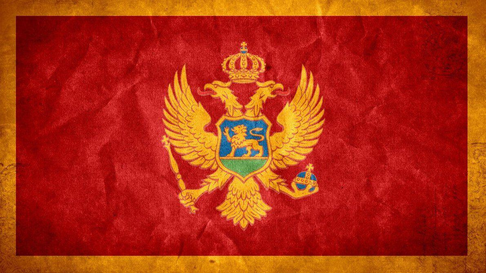
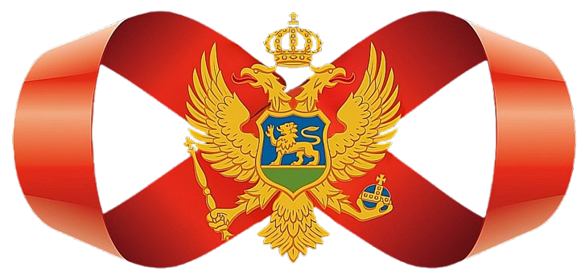
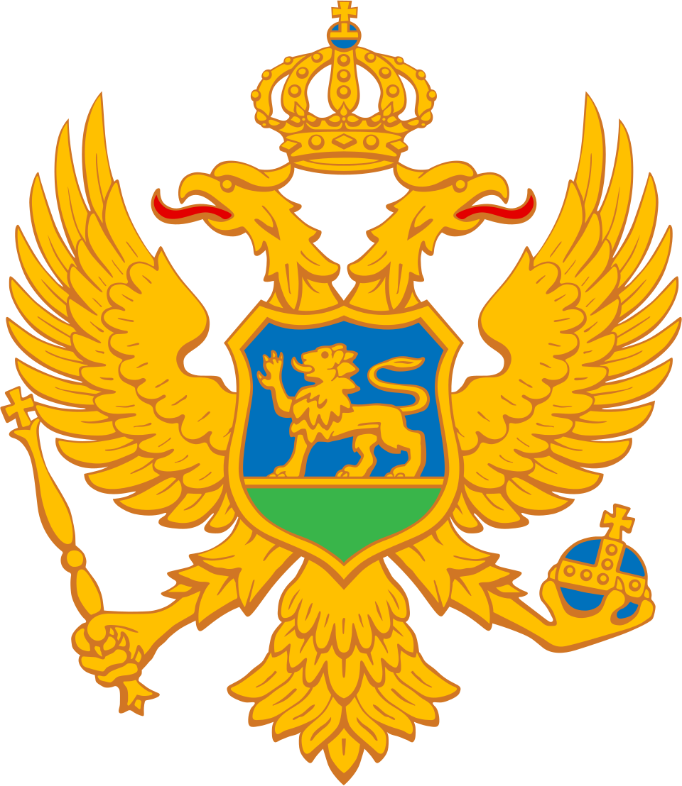

<!DOCTYPE html>
<html lang="en">
<head>
<meta charset="UTF-8">
<meta name="viewport" content="width=device-width, initial-scale=1.0">
<title>Crna Gora — Istorija</title>
<link rel="preconnect" href="https://fonts.googleapis.com">
<link href="https://fonts.googleapis.com/css2?family=Playfair+Display:ital,wght@0,400;0,600;1,400&family=Jost:wght@300;400;500&display=swap" rel="stylesheet">
<script src="https://unpkg.com/react@18.3.1/umd/react.development.js" integrity="sha384-hD6/rw4ppMLGNu3tX5cjIb+uRZ7UkRJ6BPkLpg4hAu/6onKUg4lLsHAs9EBPT82L" crossorigin="anonymous"></script>
<script src="https://unpkg.com/react-dom@18.3.1/umd/react-dom.development.js" integrity="sha384-u6aeetuaXnQ38mYT8rp6sbXaQe3NL9t+IBXmnYxwkUI2Hw4bsp2Wvmx4yRQF1uAm" crossorigin="anonymous"></script>
<script src="https://unpkg.com/@babel/standalone@7.29.0/babel.min.js" integrity="sha384-m08KidiNqLdpJqLq95G/LEi8Qvjl/xUYll3QILypMoQ65QorJ9Lvtp2RXYGBFj1y" crossorigin="anonymous"></script>
<style>
  *, *::before, *::after { box-sizing: border-box; margin: 0; padding: 0; }

  :root {
    --bg: #F4F0E8;
    --bg2: #EDE8DC;
    --ink: #1C1810;
    --ink-light: #6B6355;
    --red: #8B1F26;
    --gold: #B8862E;
    --rail: #2C2419;
    --serif: 'Playfair Display', Georgia, serif;
    --sans: 'Jost', Helvetica, sans-serif;
  }

  html, body { height: 100%; overflow: hidden; background: var(--bg); color: var(--ink); }

  #root { height: 100vh; display: flex; flex-direction: column; }

  /* HEADER */
  .header {
    flex-shrink: 0;
    display: flex;
    align-items: flex-end;
    justify-content: space-between;
    padding: 28px 52px 20px;
    border-bottom: 1px solid rgba(28,24,16,0.12);
    background: transparent;
    position: relative;
    z-index: 10;
  }
  .header-left { display: flex; align-items: center; gap: 14px; }
  .header-crest { height: 44px; width: auto; flex-shrink: 0; user-select: none; }
  .header-text { display: flex; flex-direction: column; gap: 3px; }
  .header-title {
    font-family: var(--serif);
    font-size: 22px;
    font-weight: 400;
    letter-spacing: 0.02em;
    color: var(--ink);
  }
  .header-sub {
    font-family: var(--sans);
    font-size: 11px;
    font-weight: 300;
    letter-spacing: 0.14em;
    text-transform: uppercase;
    color: var(--ink-light);
  }
  .header-nav {
    display: flex;
    align-items: center;
    gap: 8px;
  }
  .nav-btn {
    width: 36px; height: 36px;
    border: 1px solid rgba(28,24,16,0.2);
    border-radius: 50%;
    background: transparent;
    cursor: pointer;
    display: flex; align-items: center; justify-content: center;
    color: var(--ink);
    transition: all 0.2s;
    font-size: 14px;
  }
  .nav-btn:hover { background: var(--ink); color: var(--bg); border-color: var(--ink); }
  .nav-hint {
    font-family: var(--sans);
    font-size: 10px;
    letter-spacing: 0.1em;
    text-transform: uppercase;
    color: var(--ink-light);
    margin-right: 8px;
  }

  /* LANG TOGGLE */
  .lang-toggle {
    display: flex;
    align-items: center;
    border: 1px solid rgba(28,24,16,0.2);
    border-radius: 20px;
    overflow: hidden;
    margin-right: 12px;
    font-family: var(--sans);
    font-size: 11px;
    letter-spacing: 0.1em;
    text-transform: uppercase;
  }
  .lang-btn {
    padding: 6px 13px;
    background: transparent;
    border: none;
    cursor: pointer;
    color: var(--ink-light);
    transition: all 0.2s;
    font-family: var(--sans);
    font-size: 11px;
    letter-spacing: 0.1em;
    text-transform: uppercase;
  }
  .lang-btn.active {
    background: var(--ink);
    color: var(--bg);
  }

  /* TIMELINE SCROLL AREA */
  .timeline-scroll {
    flex: 1;
    overflow-x: auto;
    overflow-y: hidden;
    scroll-behavior: smooth;
    cursor: grab;
    position: relative;
  }
  .timeline-bg-layer {
    position: fixed;
    inset: 0;
    width: 100vw;
    height: 100vh;
    object-fit: cover;
    object-position: center;
    pointer-events: none;
    z-index: 0;
    user-select: none;
    transition: opacity 0.9s ease;
  }
  .timeline-bg-flag { opacity: 0.22; }
  .timeline-bg-mobius { opacity: 0; }
  .timeline-bg-flag.fade-out { opacity: 0; }
  .timeline-bg-mobius.fade-in { opacity: 0.13; }

  .timeline-bg {
    position: fixed;
    top: 50%; left: 50%;
    transform: translate(-50%, -50%);
    width: auto;
    height: 65%;
    max-height: 65vh;
    opacity: 0.13;
    pointer-events: none;
    z-index: 0;
    user-select: none;
  }
  .timeline-canvas { position: relative; z-index: 1; }
  .timeline-scroll:active { cursor: grabbing; }
  .timeline-scroll::-webkit-scrollbar { height: 3px; }
  .timeline-scroll::-webkit-scrollbar-track { background: var(--bg2); }
  .timeline-scroll::-webkit-scrollbar-thumb { background: var(--gold); border-radius: 2px; }

  /* INNER CANVAS */
  .timeline-canvas {
    position: relative;
    height: 100%;
    display: flex;
    align-items: center;
  }

  /* RAIL LINE */
  .rail-line {
    position: absolute;
    top: 50%;
    transform: translateY(-50%);
    height: 1px;
    background: var(--rail);
    transform-origin: left center;
    animation: drawLine 1.4s cubic-bezier(0.4,0,0.2,1) forwards;
  }
  @keyframes drawLine {
    from { transform: translateY(-50%) scaleX(0); }
    to   { transform: translateY(-50%) scaleX(1); }
  }

  /* ERA BANDS */
  .era-band {
    position: absolute;
    top: 0; bottom: 0;
    opacity: 0.035;
    background: var(--ink);
    pointer-events: none;
  }

  /* EVENT */
  .event {
    position: absolute;
    display: flex;
    flex-direction: column;
    align-items: center;
    cursor: pointer;
    transition: none;
  }

  /* DOT */
  .dot {
    position: absolute;
    top: 50%;
    transform: translateY(-50%);
    width: 10px; height: 10px;
    border-radius: 50%;
    background: var(--bg);
    border: 2px solid var(--rail);
    transition: all 0.2s;
    z-index: 2;
  }
  .event:hover .dot, .event.active .dot {
    background: var(--red);
    border-color: var(--red);
    width: 14px; height: 14px;
    box-shadow: 0 0 0 4px rgba(139,31,38,0.15);
  }
  .event.key-event .dot {
    /* key events use the same dot styling as regular events */
  }

  /* Era jump bar */
  .era-jump {
    display: flex; gap: 4px;
    padding: 8px 52px;
    border-bottom: 1px solid rgba(28,24,16,0.08);
    background: transparent;
    position: relative;
    z-index: 10;
    flex-shrink: 0;
    overflow-x: auto;
    scrollbar-width: none;
  }
  .era-jump::-webkit-scrollbar { display: none; }
  .era-chip {
    font-family: var(--sans);
    font-size: 10px;
    letter-spacing: 0.14em;
    text-transform: uppercase;
    padding: 6px 12px;
    border: 1px solid transparent;
    background: transparent;
    color: var(--ink-light);
    cursor: pointer;
    border-radius: 2px;
    white-space: nowrap;
    transition: all 0.2s;
  }
  .era-chip:hover { color: var(--ink); border-color: rgba(28,24,16,0.2); }

  .print-btn {
    padding: 6px 12px;
    background: transparent;
    border: 1px solid rgba(28,24,16,0.25);
    color: var(--ink);
    font-family: var(--sans);
    font-size: 10px;
    letter-spacing: 0.14em;
    text-transform: uppercase;
    cursor: pointer;
    border-radius: 2px;
    transition: all 0.2s;
    margin-left: 8px;
  }
  .print-btn:hover { background: var(--ink); color: var(--bg); border-color: var(--ink); }

  /* PRINT BOOKLET */
  .print-booklet { display: none; }
  @media print {
    @page { size: A4 portrait; margin: 10mm 12mm; }
    html, body { overflow: visible !important; height: auto !important; background: #fff !important; }
    #root > *:not(.print-booklet) { display: none !important; }
    .print-booklet {
      display: block !important;
      color: #1C1810;
      background: #fff;
      font-family: var(--serif);
    }
    .pb-header {
      text-align: center;
      padding-bottom: 12pt;
      margin-bottom: 16pt;
      border-bottom: 1px solid #1C1810;
    }
    .pb-crest { height: 54pt; width: auto; display: block; margin: 0 auto 8pt; }
    .pb-header h1 { font-size: 30pt; font-weight: 400; letter-spacing: 0.02em; margin-bottom: 5pt; }
    .pb-header .pb-sub { font-family: var(--sans); font-size: 8.5pt; letter-spacing: 0.3em; text-transform: uppercase; color: #6B6355; }
    .pb-header .pb-rule { width: 55pt; height: 1px; background: #B8862E; margin: 10pt auto 0; }

    .pb-timeline {
      column-count: 2;
      column-gap: 28pt;
      column-fill: balance;
    }
    .pb-era-title {
      font-family: var(--sans);
      font-size: 8pt;
      letter-spacing: 0.28em;
      text-transform: uppercase;
      color: #6B6355;
      margin: 9pt 0 5pt 13pt;
      break-after: avoid;
    }
    .pb-era-title:first-child { margin-top: 0; }
    .pb-event {
      break-inside: avoid;
      position: relative;
      padding-left: 13pt;
      padding-bottom: 5pt;
      margin-bottom: 6pt;
      border-left: 0.75pt solid rgba(28,24,16,0.35);
    }
    .pb-event::before {
      content: '';
      position: absolute;
      left: -3pt; top: 5pt;
      width: 6pt; height: 6pt;
      border-radius: 50%;
      background: #8B1F26;
    }
    .pb-event.key::before {
      background: #fff;
      border: 1pt solid #B8862E;
      box-shadow: 0 0 0 1pt rgba(184,134,46,0.4);
    }
    .pb-year {
      font-family: var(--serif);
      font-size: 11.5pt;
      font-weight: 600;
      color: #8B1F26;
      display: block;
      margin-bottom: 1.5pt;
    }
    .pb-event.key .pb-year { color: #B8862E; }
    .pb-title { font-family: var(--serif); font-size: 10pt; font-weight: 600; margin-bottom: 1.5pt; line-height: 1.28; }
    .pb-desc { font-family: var(--sans); font-size: 8pt; line-height: 1.4; color: #1C1810; }
  }

  /* FLOATING ANTHEM BUTTON */
  .anthem-btn {
    position: fixed;
    bottom: 68px;
    left: 24px;
    z-index: 60;
    display: flex;
    align-items: center;
    gap: 10px;
    padding: 10px 16px 10px 13px;
    background: rgba(28, 24, 16, 0.2);
    backdrop-filter: blur(10px);
    -webkit-backdrop-filter: blur(10px);
    border: 1px solid rgba(184, 134, 46, 0.4);
    border-radius: 999px;
    color: var(--bg);
    font-family: var(--sans);
    font-size: 10px;
    font-weight: 400;
    letter-spacing: 0.14em;
    text-transform: uppercase;
    cursor: pointer;
    transition: all 0.25s ease;
    opacity: 0.78;
  }
  .anthem-btn:hover { opacity: 1; background: rgba(28, 24, 16, 0.78); border-color: var(--gold); }
  .anthem-btn.playing { border-color: var(--gold); opacity: 1; background: rgba(139, 31, 38, 0.78); }
  .anthem-btn-icon {
    width: 22px; height: 22px;
    border-radius: 50%;
    background: var(--gold);
    color: var(--ink);
    display: flex; align-items: center; justify-content: center;
    font-size: 10px;
    flex-shrink: 0;
  }
  .anthem-btn.playing .anthem-btn-icon { background: var(--bg); }
  .anthem-btn-label { display: flex; flex-direction: column; align-items: flex-start; gap: 1px; line-height: 1.1; white-space: nowrap; }
  .anthem-btn-label > span { white-space: nowrap; }
  .anthem-btn-label small { font-size: 8.5px; opacity: 0.7; letter-spacing: 0.18em; white-space: nowrap; }
  @media (max-width: 600px) {
    .anthem-btn { bottom: 20px; left: 16px; padding: 8px 14px 8px 10px; font-size: 9px; }
    .anthem-btn-icon { width: 20px; height: 20px; font-size: 9px; }
  }
  @media print { .anthem-btn { display: none !important; } }

  @media (prefers-reduced-motion: reduce) {
    *, *::before, *::after {
      animation-duration: 0.01ms !important;
      transition-duration: 0.01ms !important;
    }
    /* Keep the bg cross-fade — it's subtle and not motion-sickness-inducing */
    .timeline-bg-layer, .mobile-bg-layer {
      transition: opacity 0.9s ease !important;
    }
  }
  .event.key-event:hover .dot, .event.key-event.active .dot {
    background: var(--red);
    border-color: var(--red);
    width: 14px; height: 14px;
  }

  /* STEM */
  .stem {
    position: absolute;
    width: 1px;
    background: rgba(28,24,16,0.25);
    transition: background 0.2s;
  }
  .event:hover .stem, .event.active .stem { background: var(--red); }

  /* CARD */
  .event-card {
    position: absolute;
    width: 160px;
    transition: opacity 0.2s, transform 0.2s;
  }
  .event-card.above { bottom: calc(50% + 28px); text-align: left; }
  .event-card.below { top: calc(50% + 28px); text-align: left; }

  .event-year {
    font-family: var(--serif);
    font-size: 13px;
    font-weight: 400;
    font-style: italic;
    color: var(--gold);
    line-height: 1;
    margin-bottom: 4px;
    transition: color 0.2s;
  }
  .event:hover .event-year, .event.active .event-year { color: var(--red); }

  .event-title {
    font-family: var(--sans);
    font-size: 12px;
    font-weight: 500;
    letter-spacing: 0.02em;
    color: var(--ink);
    line-height: 1.35;
    text-wrap: pretty;
  }

  /* HOVER PREVIEW BUBBLE */
  .preview-bubble {
    position: fixed;
    z-index: 100;
    background: var(--ink);
    color: var(--bg);
    border-radius: 6px;
    padding: 12px 16px;
    width: 220px;
    pointer-events: none;
    opacity: 0;
    transform: translateY(6px);
    transition: opacity 0.15s, transform 0.15s;
    font-family: var(--sans);
  }
  .preview-bubble.visible { opacity: 1; transform: translateY(0); }
  .preview-bubble-year {
    font-size: 10px;
    letter-spacing: 0.12em;
    text-transform: uppercase;
    color: var(--gold);
    margin-bottom: 4px;
  }
  .preview-bubble-title {
    font-size: 13px;
    font-weight: 500;
    margin-bottom: 6px;
    line-height: 1.3;
  }
  .preview-bubble-desc {
    font-size: 11px;
    font-weight: 300;
    color: rgba(244,240,232,0.7);
    line-height: 1.5;
  }

  /* DETAIL PANEL */
  .detail-panel {
    position: fixed;
    bottom: 0; right: 0;
    width: 380px;
    background: var(--bg);
    border-top: 1px solid rgba(28,24,16,0.12);
    border-left: 1px solid rgba(28,24,16,0.12);
    padding: 36px 40px;
    z-index: 50;
    transform: translateY(100%);
    transition: transform 0.35s cubic-bezier(0.4,0,0.2,1);
  }
  .detail-panel.open { transform: translateY(0); }

  .detail-close {
    position: absolute;
    top: 20px; right: 24px;
    width: 28px; height: 28px;
    border: none; background: transparent;
    cursor: pointer;
    font-size: 18px;
    color: var(--ink-light);
    display: flex; align-items: center; justify-content: center;
    border-radius: 50%;
    transition: background 0.2s;
  }
  .detail-close:hover { background: rgba(28,24,16,0.08); }

  .detail-year {
    font-family: var(--serif);
    font-size: 42px;
    font-weight: 400;
    color: var(--red);
    line-height: 1;
    margin-bottom: 10px;
  }
  .detail-title {
    font-family: var(--serif);
    font-size: 20px;
    font-weight: 600;
    line-height: 1.25;
    margin-bottom: 18px;
    color: var(--ink);
  }
  .detail-divider {
    width: 32px; height: 1px;
    background: var(--gold);
    margin-bottom: 18px;
  }
  .detail-desc {
    font-family: var(--sans);
    font-size: 14px;
    font-weight: 300;
    line-height: 1.75;
    color: var(--ink);
  }
  .detail-tag {
    display: inline-block;
    margin-top: 20px;
    font-family: var(--sans);
    font-size: 10px;
    letter-spacing: 0.12em;
    text-transform: uppercase;
    padding: 4px 10px;
    border: 1px solid rgba(28,24,16,0.18);
    color: var(--ink-light);
    border-radius: 2px;
  }

  /* YEAR COUNTER FOOTER */
  .footer {
    flex-shrink: 0;
    display: flex;
    align-items: center;
    justify-content: center;
    gap: 24px;
    padding: 12px 52px;
    border-top: 1px solid rgba(28,24,16,0.08);
    background: transparent;
    position: relative;
    z-index: 10;
  }
  .footer-era {
    font-family: var(--sans);
    font-size: 10px;
    letter-spacing: 0.12em;
    text-transform: uppercase;
    color: var(--ink-light);
    display: flex;
    align-items: center;
    gap: 8px;
  }
  .footer-dot {
    width: 6px; height: 6px;
    border-radius: 50%;
    display: inline-block;
  }

  /* ANIMATIONS */
  .event { animation: fadeInEvent 0.5s ease both; }
  @keyframes fadeInEvent {
    from { opacity: 0; transform: translateY(8px); }
    to   { opacity: 1; transform: translateY(0); }
  }

  /* ── MOBILE PORTRAIT ─────────────────────────────────── */
  @media (max-width: 600px) {
    html, body { overflow: hidden; }

    .mobile-header {
      flex-shrink: 0;
      display: flex;
      align-items: center;
      justify-content: space-between;
      padding: 16px 20px 12px;
      border-bottom: 1px solid rgba(28,24,16,0.12);
      background: transparent;
      position: relative;
      z-index: 10;
    }
    .mobile-header-title-wrap { display: flex; align-items: center; gap: 10px; }
    .mobile-header-crest { height: 28px; width: auto; flex-shrink: 0; }
    .mobile-header-title {
      font-family: var(--serif);
      font-size: 17px;
      font-weight: 400;
      color: var(--ink);
    }
    .mobile-header-title em {
      font-style: italic;
      color: var(--ink-light);
      font-size: 14px;
    }

    /* Vertical timeline scroll */
    .mobile-scroll {
      flex: 1;
      overflow-y: auto;
      overflow-x: hidden;
      padding: 24px 20px 120px 52px;
      position: relative;
      z-index: 1;
    }
    .mobile-scroll::-webkit-scrollbar { display: none; }
    .mobile-scroll-inner { position: relative; }

    /* Vertical rail — grows with content, aligned to dot centers at 40px */
    .mobile-rail {
      position: absolute;
      left: -12px;
      top: 0;
      bottom: 0;
      width: 1px;
      background: var(--rail);
      z-index: 1;
    }

    /* Mobile: narrower, screen-width backgrounds with same cross-fade */
    .mobile-bg-layer {
      position: fixed;
      top: 50%; left: 0;
      transform: translateY(-50%);
      width: 100vw;
      height: auto;
      object-fit: contain;
      pointer-events: none;
      z-index: 0;
      user-select: none;
      transition: opacity 0.9s ease;
    }
    .mobile-bg-flag { opacity: 0.22; }
    .mobile-bg-mobius { opacity: 0; }
    .mobile-bg-flag.fade-out { opacity: 0; }
    .mobile-bg-mobius.fade-in { opacity: 0.13; }

    /* Era section header */
    .mobile-era-label {
      font-family: var(--sans);
      font-size: 9px;
      letter-spacing: 0.14em;
      text-transform: uppercase;
      padding: 6px 0 6px 0;
      margin-bottom: 4px;
      opacity: 0.7;
      border-bottom: 1px solid currentColor;
      margin-left: -36px;
      padding-left: 52px;
    }

    /* Event row */
    .mobile-event {
      display: flex;
      align-items: flex-start;
      gap: 16px;
      margin-bottom: 0;
      padding: 14px 0;
      cursor: pointer;
      position: relative;
    }

    /* Dot — large touch target */
    .mobile-dot-wrap {
      flex-shrink: 0;
      width: 44px; height: 44px;
      display: flex; align-items: center; justify-content: center;
      margin-left: -34px;
      position: relative;
      z-index: 2;
    }
    .mobile-dot {
      width: 11px; height: 11px;
      border-radius: 50%;
      background: var(--bg);
      border: 2px solid var(--rail);
      transition: all 0.2s;
    }
    .mobile-event.active .mobile-dot {
      background: var(--red);
      border-color: var(--red);
      width: 15px; height: 15px;
      box-shadow: 0 0 0 5px rgba(139,31,38,0.12);
    }

    /* Card */
    .mobile-card { flex: 1; padding-top: 10px; }
    .mobile-year {
      font-family: var(--serif);
      font-size: 12px;
      font-style: italic;
      color: var(--gold);
      margin-bottom: 2px;
    }
    .mobile-event.active .mobile-year { color: var(--red); }
    .mobile-title {
      font-family: var(--sans);
      font-size: 14px;
      font-weight: 500;
      color: var(--ink);
      line-height: 1.3;
    }
    .mobile-short {
      font-family: var(--sans);
      font-size: 12px;
      font-weight: 300;
      color: var(--ink-light);
      margin-top: 3px;
      line-height: 1.4;
    }

    /* Mobile detail sheet */
    .mobile-sheet {
      position: fixed;
      bottom: 0; left: 0; right: 0;
      background: var(--bg);
      border-top: 1px solid rgba(28,24,16,0.15);
      padding: 28px 24px 40px;
      z-index: 200;
      transform: translateY(100%);
      transition: transform 0.35s cubic-bezier(0.4,0,0.2,1);
      max-height: 65vh;
      overflow-y: auto;
    }
    .mobile-sheet.open { transform: translateY(0); }
    .mobile-sheet-handle {
      width: 36px; height: 4px;
      border-radius: 2px;
      background: rgba(28,24,16,0.2);
      margin: 0 auto 20px;
    }
    .mobile-sheet-year {
      font-family: var(--serif);
      font-size: 38px;
      color: var(--red);
      line-height: 1;
      margin-bottom: 8px;
    }
    .mobile-sheet-title {
      font-family: var(--serif);
      font-size: 18px;
      font-weight: 600;
      line-height: 1.25;
      margin-bottom: 14px;
    }
    .mobile-sheet-divider {
      width: 28px; height: 1px;
      background: var(--gold);
      margin-bottom: 14px;
    }
    .mobile-sheet-desc {
      font-family: var(--sans);
      font-size: 14px;
      font-weight: 300;
      line-height: 1.75;
      color: var(--ink);
    }
    .mobile-sheet-close {
      position: absolute;
      top: 16px; right: 20px;
      width: 32px; height: 32px;
      border: none; background: transparent;
      font-size: 18px; color: var(--ink-light);
      cursor: pointer; border-radius: 50%;
      display: flex; align-items: center; justify-content: center;
    }
    .mobile-sheet-tag {
      display: inline-block;
      margin-top: 16px;
      font-family: var(--sans);
      font-size: 10px;
      letter-spacing: 0.12em;
      text-transform: uppercase;
      padding: 4px 10px;
      border: 1px solid;
      border-radius: 2px;
    }
    .mobile-overlay {
      position: fixed; inset: 0;
      background: rgba(28,24,16,0.3);
      z-index: 199;
      opacity: 0;
      pointer-events: none;
      transition: opacity 0.3s;
    }
    .mobile-overlay.open { opacity: 1; pointer-events: all; }
  }
</style>
</head>
<body>
<div id="root"></div>

<script type="text/babel">
const { useState, useRef, useEffect, useCallback } = React;

const ANTHEM_URL = "assets/Crnogorska-himna-National-Anthem-of-Montenegro.mp3";

const ANTHEM_LABELS = {
  en: { play: "Play anthem",    pause: "Pause anthem",    sub: "Oj, svijetla majska zoro" },
  me: { play: "Pusti himnu",    pause: "Pauziraj himnu",  sub: "Oj, svijetla majska zoro" },
  de: { play: "Hymne abspielen", pause: "Hymne pausieren", sub: "Oj, svijetla majska zoro" },
  ru: { play: "Играть гимн",    pause: "Пауза",           sub: "Oj, svijetla majska zoro" },
};

function useAnthem() {
  const [playing, setPlaying] = useState(false);
  const audioRef = useRef(null);
  useEffect(() => () => { if (audioRef.current) audioRef.current.pause(); }, []);
  const toggle = () => {
    if (!audioRef.current) {
      const a = new Audio(ANTHEM_URL);
      a.addEventListener('ended', () => setPlaying(false));
      audioRef.current = a;
    }
    if (playing) { audioRef.current.pause(); setPlaying(false); }
    else { audioRef.current.play().then(() => setPlaying(true)).catch(() => setPlaying(false)); }
  };
  return { playing, toggle };
}

function AnthemButton({ lang }) {
  const { playing, toggle } = useAnthem();
  const L = ANTHEM_LABELS[lang] || ANTHEM_LABELS.en;
  return (
    <button className={`anthem-btn${playing ? ' playing' : ''}`} onClick={toggle} aria-label={playing ? L.pause : L.play}>
      <span className="anthem-btn-icon">{playing ? '■' : '▶'}</span>
      <span className="anthem-btn-label">
        <span>{playing ? L.pause : L.play}</span>
        <small>{L.sub}</small>
      </span>
    </button>
  );
}

// Detect mobile portrait
function useIsMobile() {
  const [isMobile, setIsMobile] = useState(() => window.innerWidth <= 600);
  useEffect(() => {
    const mq = window.matchMedia('(max-width: 600px)');
    const handler = e => setIsMobile(e.matches);
    mq.addEventListener('change', handler);
    return () => mq.removeEventListener('change', handler);
  }, []);
  return isMobile;
}

// Group events by era in order
function groupByEra(events) {
  const groups = [];
  let current = null;
  for (const ev of events) {
    if (!current || current.era !== ev.tag) {
      current = { era: ev.tag, events: [] };
      groups.push(current);
    }
    current.events.push(ev);
  }
  return groups;
}

function MobileTimeline({ lang, switchLang, t, loc }) {
  const [active, setActive] = useState(null);
  const [moved, setMoved] = useState(false);
  const scrollRef = useRef(null);
  const handleSetActive = id => setActive(active === id ? null : id);

  // Cross-fade background: show mobius while scrolling, return to flag on pause
  useEffect(() => {
    const el = scrollRef.current;
    if (!el) return;
    let timer;
    const onScroll = () => {
      setMoved(true);
      clearTimeout(timer);
      timer = setTimeout(() => setMoved(false), 900);
    };
    el.addEventListener('scroll', onScroll, { passive: true });
    return () => { el.removeEventListener('scroll', onScroll); clearTimeout(timer); };
  }, []);

  const activeEvent = EVENTS.find(e => e.id === active);
  const groups = groupByEra(EVENTS);

  return (
    <div style={{ height:'100vh', display:'flex', flexDirection:'column' }}>
      {/* Cross-fading backgrounds */}
      
      

      {/* Mobile Header */}
      <header className="mobile-header">
        <div className="mobile-header-title-wrap">
          
          <div className="mobile-header-title">
            Crna Gora <em>— {lang === 'me' ? 'istorija' : 'Montenegro'}</em>
          </div>
        </div>
        <div className="lang-toggle">
          <button className={`lang-btn${lang === 'en' ? ' active' : ''}`} onClick={() => switchLang('en')}>EN</button>
          <button className={`lang-btn${lang === 'me' ? ' active' : ''}`} onClick={() => switchLang('me')}>MNE</button>
          <button className={`lang-btn${lang === 'de' ? ' active' : ''}`} onClick={() => switchLang('de')}>DE</button>
          <button className={`lang-btn${lang === 'ru' ? ' active' : ''}`} onClick={() => switchLang('ru')}>RU</button>
        </div>
      </header>

      {/* Vertical scroll */}
      <div className="mobile-scroll" ref={scrollRef}>
        <div className="mobile-scroll-inner">
          <div className="mobile-rail" />

          {groups.map(group => (
            <div key={group.era}>
              {/* Era label */}
              <div className="mobile-era-label" style={{ color: TAG_COLORS[group.era] }}>
                {t.eras[group.era]}
              </div>

              {group.events.map(ev => {
                const evLoc = loc(ev);
                return (
                  <div
                    key={ev.id}
                    className={`mobile-event${active === ev.id ? ' active' : ''}`}
                    onClick={() => handleSetActive(ev.id)}
                  >
                    <div className="mobile-dot-wrap">
                      <div className="mobile-dot" />
                    </div>
                    <div className="mobile-card">
                      <div className="mobile-year">{ev.year}</div>
                      <div className="mobile-title">{evLoc.title}</div>
                      <div className="mobile-short">{evLoc.short}</div>
                    </div>
                  </div>
                );
              })}
            </div>
          ))}
        </div>
      </div>

      {/* Overlay */}
      <div className={`mobile-overlay${activeEvent ? ' open' : ''}`} onClick={() => handleSetActive(null)} />

      <AnthemButton lang={lang} />

      {/* Detail sheet */}
      <div className={`mobile-sheet${activeEvent ? ' open' : ''}`}>
        <div className="mobile-sheet-handle" />
        {activeEvent && <>
          <button className="mobile-sheet-close" onClick={() => handleSetActive(null)}>✕</button>
          <div className="mobile-sheet-year">{activeEvent.year}</div>
          <div className="mobile-sheet-title">{loc(activeEvent).title}</div>
          <div className="mobile-sheet-divider" />
          <div className="mobile-sheet-desc">{loc(activeEvent).desc}</div>
          <div className="mobile-sheet-tag" style={{ color: TAG_COLORS[activeEvent.tag], borderColor: TAG_COLORS[activeEvent.tag] }}>
            {t.eras[activeEvent.tag]}
          </div>
        </>}
      </div>
    </div>
  );
}

const TRANSLATIONS = {
  en: {
    headerTitle: <>Crna Gora <em style={{fontFamily:'Playfair Display,serif',fontWeight:400,fontStyle:'italic',fontSize:18,color:'var(--ink-light)'}}>— Montenegro</em></>,
    headerSub: (first, last) => `A History in Milestones · ${first}–${last}`,
    navHint: "Scroll or drag to explore",
    eras: { "Medieval":"Medieval","Ottoman Era":"Ottoman Era","Principality":"Principality","Kingdom":"Kingdom","Yugoslavia":"Yugoslavia","Modern":"Modern" },
  },
  me: {
    headerTitle: <>Crna Gora <em style={{fontFamily:'Playfair Display,serif',fontWeight:400,fontStyle:'italic',fontSize:18,color:'var(--ink-light)'}}>— istorija</em></>,
    headerSub: (first, last) => `Istorija u prekretnicama · ${first}–${last}`,
    navHint: "Pomjerite ili prevucite da istražite",
    eras: { "Medieval":"Srednji vijek","Ottoman Era":"Osmansko doba","Principality":"Kneževina","Kingdom":"Kraljevina","Yugoslavia":"Jugoslavija","Modern":"Savremeno" },
  },
  de: {
    headerTitle: <>Crna Gora <em style={{fontFamily:'Playfair Display,serif',fontWeight:400,fontStyle:'italic',fontSize:18,color:'var(--ink-light)'}}>— Geschichte</em></>,
    headerSub: (first, last) => `Geschichte in Meilensteinen · ${first}–${last}`,
    navHint: "Scrollen oder ziehen",
    eras: { "Medieval":"Mittelalter","Ottoman Era":"Osmanische Ära","Principality":"Fürstentum","Kingdom":"Königreich","Yugoslavia":"Jugoslawien","Modern":"Moderne" },
  },
  ru: {
    headerTitle: <>Crna Gora <em style={{fontFamily:'Playfair Display,serif',fontWeight:400,fontStyle:'italic',fontSize:18,color:'var(--ink-light)'}}>— история</em></>,
    headerSub: (first, last) => `История в вехах · ${first}–${last}`,
    navHint: "Прокрутите или перетащите",
    eras: { "Medieval":"Средневековье","Ottoman Era":"Османская эпоха","Principality":"Княжество","Kingdom":"Королевство","Yugoslavia":"Югославия","Modern":"Современность" },
  },
};

const EVENTS = [
  { id:1,  year: 850,  side: "above", tag: "Medieval", key: false,
    en: { title: "Duklja Emerges",         short: "Origins of Montenegrin statehood", desc: "Official Montenegrin state materials date the country's history to the emergence of Duklja in the 9th century, the earliest territorial and dynastic precursor of the modern Montenegrin state on the same soil." },
    me: { title: "Nastanak Duklje",        short: "Korijeni crnogorske državnosti",   desc: "Zvanični crnogorski državni materijali datiraju istoriju zemlje od nastanka Duklje u 9. vijeku — najranijeg teritorijalnog i dinastičkog prethodnika moderne crnogorske države." },
    de: { title: "Entstehung Dukljas",     short: "Ursprünge der montenegrinischen Staatlichkeit", desc: "Offizielle montenegrinische Staatsunterlagen datieren die Geschichte des Landes auf das Entstehen Dukljas im 9. Jahrhundert — dem frühesten territorialen und dynastischen Vorläufer des modernen montenegrinischen Staates." },
    ru: { title: "Возникновение Дукли",    short: "Истоки черногорской государственности", desc: "Официальные материалы Черногории датируют историю страны возникновением Дукли в IX веке — первым территориальным и династическим предшественником современного черногорского государства." } },
  { id:2,  year: 1042, side: "below", tag: "Medieval", key: true,
    en: { title: "Battle of Bar",          short: "Victory over Byzantium",         desc: "Stefan Vojislav defeats the Byzantine army near Bar, establishing Duklja (later Zeta) as an independent principality — the earliest precursor of the Montenegrin state." },
    me: { title: "Bitka kod Bara",         short: "Pobjeda nad Vizantijom",          desc: "Stefan Vojislav pobjeđuje vizantijsku vojsku kod Bara, uspostavljajući Duklju (kasnije Zetu) kao nezavisnu kneževinu — najranijeg prethodnika crnogorske države." },
    de: { title: "Schlacht bei Bar",       short: "Sieg über Byzanz",               desc: "Stefan Vojislav besiegt die byzantinische Armee bei Bar und begründet Duklja (später Zeta) als unabhängiges Fürstentum — den frühesten Vorläufer des montenegrinischen Staates." },
    ru: { title: "Битва при Баре",         short: "Победа над Византией",           desc: "Стефан Воислав разбивает византийскую армию у Бара, основывая Дуклю (позднее Зету) как независное княжество — первый предшественник черногорского государства." } },
  { id:3,  year: 1077, side: "above", tag: "Medieval", key: false,
    en: { title: "Kingdom of Duklja",      short: "Papal recognition",              desc: "Pope Gregory VII recognizes Mihailo I Vojislavljević as King, granting Duklja international legitimacy and making it the first South Slavic kingdom." },
    me: { title: "Kraljevina Duklja",      short: "Papsko priznanje",               desc: "Papa Grgur VII prepoznaje Mihaila I Vojislavljevića kao kralja, dajući Duklji međunarodni legitimitet i čineći je prvom južnoslavenskom kraljevinom." },
    de: { title: "Königreich Duklja",      short: "Päpstliche Anerkennung",         desc: "Papst Gregor VII. erkennt Mihailo I. Vojislavljević als König an und verleiht Duklja internationale Legitimität als erstes südslawisches Königreich." },
    ru: { title: "Королевство Дукля",      short: "Папское признание",              desc: "Папа Григорий VII признаёт Михайло I Воиславлевича королём, придавая Дукле международную легитимность как первому южнославянскому королевству." } },
  { id:4,  year: 1089, side: "below", tag: "Medieval", key: false,
    en: { title: "Archbishopric of Bar",   short: "Ecclesiastical independence",    desc: "The elevation of Bar's bishopric to an archbishopric strengthens institutional autonomy. In the medieval Balkans, an independent church hierarchy was a major state-building marker, reducing dependence on external religious authority." },
    me: { title: "Barska arhiepiskopija",  short: "Crkvena nezavisnost",            desc: "Uzdizanje barske biskupije u arhiepiskopiju jača institucionalnu autonomiju. Na srednjovjekovnom Balkanu, nezavisna crkvena hijerarhija bila je ključni pokazatelj izgradnje države." },
    de: { title: "Erzbistum Bar",          short: "Kirchliche Unabhängigkeit",       desc: "Die Erhebung des Bistums Bar zum Erzbistum stärkt die institutionelle Autonomie. Im mittelalterlichen Balkan war eine unabhängige Kirchenhierarchie ein wichtiger Marker der Staatsbildung." },
    ru: { title: "Барское архиепископство",short: "Церковная независимость",        desc: "Возведение Барского епископства в архиепископство укрепляет институциональную автономию. На средневековых Балканах независимая церковная иерархия была важным показателем государственного строительства." } },
  { id:5,  year: 1360, side: "above", tag: "Medieval", key: false,
    en: { title: "Rise of Zeta",           short: "Balšić dynasty takes control",   desc: "The Balšić dynasty consolidates control over the region, renaming it Zeta and expanding its territory across much of the eastern Adriatic hinterland." },
    me: { title: "Uspon Zete",             short: "Balšići preuzimaju vlast",        desc: "Dinastija Balšić učvršćuje kontrolu nad regionom, preimenjujući ga u Zetu i šireći teritoriju duž jadranskog zaleđa." },
    de: { title: "Aufstieg Zetas",         short: "Balšić-Dynastie übernimmt",      desc: "Die Balšić-Dynastie festigt die Kontrolle über die Region, benennt sie in Zeta um und erweitert ihr Territorium im östlichen Adriahinterland." },
    ru: { title: "Возвышение Зеты",        short: "Династия Балшичей берёт власть", desc: "Династия Балшичей укрепляет контроль над регионом, переименовывая его в Зету и расширяя территорию по всему восточному адриатическому хинтерланду." } },
  { id:6,  year: 1482, side: "below", tag: "Medieval", key: false,
    en: { title: "Cetinje Founded",        short: "Capital, monastery and press",   desc: "Ivan Crnojević founds a monastery and bishopric seat at Cetinje. His son later imports a press from Venice, producing some of the earliest Cyrillic printed books after 1493 — evidence of durable institutions of rule, religion and literacy." },
    me: { title: "Osnivanje Cetinja",      short: "Prijestonica, manastir i štampa", desc: "Ivan Crnojević osniva manastir i sjedište episkopije u Cetinju. Njegov sin kasnije uvozi štampariju iz Venecije, stvarajući jedne od prvih knjiga štampanih ćirilicom — dokaz trajnih institucija vlasti i kulture." },
    de: { title: "Gründung Cetinjes",      short: "Hauptstadt, Kloster und Druckerei", desc: "Ivan Crnojević gründet ein Kloster und Bischofssitz in Cetinje. Sein Sohn importiert später eine Druckerpresse aus Venedig und druckt einige der frühesten kyrillischen Bücher — Beweis dauerhafter Institutionen." },
    ru: { title: "Основание Цетине",       short: "Столица, монастырь и типография", desc: "Иван Черноевич основывает монастырь и резиденцию епископа в Цетине. Его сын позднее привозит печатный станок из Венеции, создавая одни из первых книг, напечатанных кириллицей." } },
  { id:7,  year: 1496, side: "above", tag: "Ottoman Era", key: true,
    en: { title: "Ottoman Shadow",         short: "Fall of Zeta to the Ottomans",   desc: "The last Zetan lord flees to Venice. Though Montenegro never fully surrendered, it enters a long period of Ottoman suzerainty, fighting for autonomy through resistance." },
    me: { title: "Osmanska sjena",         short: "Pad Zete pod Osmanlije",          desc: "Posljednji zetski vlastelin bježi u Veneciju. Iako se Crna Gora nikada nije potpuno predala, ulazi u dugo razdoblje osmanske vlasti, boreći se za autonomiju." },
    de: { title: "Osmanischer Schatten",   short: "Zeta fällt an die Osmanen",       desc: "Der letzte zetische Herr flieht nach Venedig. Obwohl Montenegro nie vollständig kapitulierte, beginnt eine lange Periode osmanischer Oberherrschaft mit anhaltendem Widerstand." },
    ru: { title: "Османская тень",         short: "Падение Зеты под власть османов", desc: "Последний zetский правитель бежит в Венецию. Хотя Черногория так и не сдалась полностью, она вступает в длительный период османского сюзеренитета, борясь за автономию." } },
  { id:8,  year: 1516, side: "below", tag: "Ottoman Era", key: false,
    en: { title: "Prince-Bishop Rule",     short: "Key to Montenegro's survival",   desc: "The last Crnojević ruler retires and succession passes to the bishops of Cetinje. Historians widely regard this transition as crucial to Montenegro's survival as an independent polity under sustained Ottoman pressure." },
    me: { title: "Vladičanska vlast",      short: "Ključ opstanka Crne Gore",        desc: "Posljednji Crnojević se povlači i nasljedstvo prelazi na cetinjske episkope. Istoričari ovaj prelaz smatraju ključnim za opstanak Crne Gore kao nezavisnog polisa pod dugotrajnim osmanskim pritiskom." },
    de: { title: "Fürstbischofsherrschaft",short: "Schlüssel zu Montenegros Überleben", desc: "Der letzte Crnojević-Herrscher tritt zurück, die Nachfolge geht an die Bischöfe von Cetinje. Historiker betrachten diesen Übergang als entscheidend für das Überleben Montenegros als unabhängiges Gemeinwesen." },
    ru: { title: "Власть князей-епископов",short: "Ключ к выживанию Черногории",    desc: "Последний правитель из рода Черноевичей уходит, и власть переходит к епископам Цетине. Историки считают этот переход решающим для выживания Черногории как независного государства." } },
  { id:9,  year: 1697, side: "above", tag: "Ottoman Era", key: false,
    en: { title: "Petrović-Njegoš Dynasty",short: "Birth of a ruling dynasty",      desc: "Danilo I Petrović-Njegoš becomes prince-bishop (vladika), founding the dynasty that would rule Montenegro for over two centuries and forge its modern identity." },
    me: { title: "Dinastija Petrović-Njegoš",short:"Rađanje vladarske dinastije",   desc: "Danilo I Petrović-Njegoš postaje vladika, osnivajući dinastiju koja će vladati Crnom Gorom više od dva vijeka i oblikovati njezin moderni identitet." },
    de: { title: "Dynastie Petrović-Njegoš",short:"Geburt einer Herrscherdynastie", desc: "Danilo I. Petrović-Njegoš wird Fürstbischof (Vladika) und begründet die Dynastie, die Montenegro über zwei Jahrhunderte regieren und seine moderne Identität prägen sollte." },
    ru: { title: "Династия Петрович-Негош",short:"Рождение правящей династии",    desc: "Данило I Петрович-Негош становится владыкой, основывая династию, которая будет править Черногорией более двух веков и формировать её современную идентичность." } },
  { id:10, year: 1789, side: "below", tag: "Ottoman Era", key: false,
    en: { title: "Battle of Krusi",        short: "Major Ottoman defeat",           desc: "Montenegrin forces inflict a decisive defeat on Ottoman troops under Kara Mahmud Pasha, cementing Montenegro's de facto independence in the mountains." },
    me: { title: "Bitka kod Krusa",        short: "Veliki poraz Osmanlija",          desc: "Crnogorske snage zadaju odlučujući poraz osmanskim trupama pod Kara Mahmud-pašom, učvršćujući faktičku nezavisnost Crne Gore u planinama." },
    de: { title: "Schlacht von Krusi",     short: "Schwere osmanische Niederlage",   desc: "Montenegrinische Kräfte fügen osmanischen Truppen unter Kara Mahmud Pascha eine entscheidende Niederlage zu und festigen Montenegros faktische Unabhängigkeit im Gebirge." },
    ru: { title: "Битва при Крусах",       short: "Крупное поражение османов",      desc: "Черногорские войска наносят решительное поражение османским войскам под командованием Кара Махмуд-паши, укрепляя фактическую независимость Черногории в горах." } },
  { id:11, year: 1838, side: "above", tag: "Ottoman Era", key: false,
    en: { title: "Petar II Modernizes",    short: "Stronger central institutions",  desc: "Prince-bishop Petar II Petrović-Njegoš — poet, ruler, and diplomat — builds a stronger central state apparatus, moving governance from clan leadership toward recognizable organs of centralized government." },
    me: { title: "Modernizacija Petra II", short: "Jače centralne institucije",      desc: "Vladika Petar II Petrović-Njegoš — pjesnik, vladar i diplomat — gradi jači centralni državni aparat, pomjerajući upravu od plemenskog vođstva ka prepoznatljivim organima centralizovane vlasti." },
    de: { title: "Petar II. modernisiert", short: "Stärkere Zentralinstitutionen",   desc: "Fürstbischof Petar II. Petrović-Njegoš — Dichter, Herrscher und Diplomat — baut einen stärkeren Zentralstaatsapparat auf und verschiebt die Regierung von Stammesführung zu zentralisierten Organen." },
    ru: { title: "Модернизация Петра II",  short: "Укрепление центральных институтов", desc: "Владыка Пётр II Петрович-Негош — поэт, правитель и дипломат — строит более сильный центральный государственный аппарат, переходя от племенного управления к централизованным органам власти." } },
  { id:12, year: 1851, side: "below", tag: "Principality", key: true,
    en: { title: "Secular State",          short: "Church and state separated",     desc: "Danilo II Petrović transforms Montenegro from a theocratic prince-bishopric into a secular principality, modernizing governance and legal structures." },
    me: { title: "Svjetovna država",       short: "Crkva i država odvojene",         desc: "Danilo II Petrović transformiše Crnu Goru iz teokratske vladičanske kneževine u svjetovnu kneževinu, modernizujući upravu i pravne strukture." },
    de: { title: "Säkularer Staat",        short: "Kirche und Staat getrennt",       desc: "Danilo II. Petrović wandelt Montenegro von einem theokratischen Fürstbistum in ein weltliches Fürstentum um und modernisiert Regierung und Rechtsstrukturen." },
    ru: { title: "Светское государство",   short: "Церковь и государство разделены", desc: "Данило II Петрович преобразует Черногорию из теократического княжества-епископства в светское княжество, модернизируя управление и правовые структуры." } },
  { id:13, year: 1858, side: "above", tag: "Principality", key: false,
    en: { title: "Battle of Grahovac",     short: "Great Powers demarcate borders", desc: "Montenegro's victory at Grahovac forces the Great Powers to formally demarcate the border with Ottoman Turkey — strong evidence that Montenegro was already being treated as a distinct political unit by outside powers, short of full recognition." },
    me: { title: "Bitka na Grahovcu",      short: "Velike sile razgraničavaju",      desc: "Pobjeda Crne Gore na Grahovcu primorava Velike sile da formalno razgraniče granicu sa Osmanskom Turskom — jak dokaz da je Crna Gora već tretirana kao posebna politička jedinica od strane stranih sila." },
    de: { title: "Schlacht von Grahovac",  short: "Großmächte demarkieren Grenzen", desc: "Montenegros Sieg bei Grahovac zwingt die Großmächte, die Grenze zur Osmanischen Türkei formal zu demarkieren — ein starker Beweis, dass Montenegro bereits als eigenständige politische Einheit behandelt wurde." },
    ru: { title: "Битва при Граховце",     short: "Великие державы устанавливают границы", desc: "Победа Черногории при Граховце вынуждает великие державы официально демаркировать границу с Османской Турцией — убедительное свидетельство того, что Черногория уже воспринималась как отдельная политическая единица." } },
  { id:14, year: 1874, side: "below", tag: "Principality", key: false,
    en: { title: "Foreign Affairs Office", short: "Diplomacy Day — May 6",         desc: "The Office for Foreign Affairs of the Principality of Montenegro is established on 6 May 1874, now commemorated as Montenegrin Diplomacy Day. A standing foreign ministry is one of the clearest markers of recognized statehood." },
    me: { title: "Ministarstvo vanjskih poslova", short: "Dan diplomatije — 6. maj", desc: "Kancelarija za vanjske poslove Kneževine Crne Gore osnovana je 6. maja 1874, danas obilježena kao Dan crnogorske diplomatije. Stalno ministarstvo vanjskih poslova jedan je od najjasnijih pokazatelja državnosti." },
    de: { title: "Amt für Auswärtige Angelegenheiten", short: "Tag der Diplomatie — 6. Mai", desc: "Das Amt für Auswärtige Angelegenheiten des Fürstentums Montenegro wird am 6. Mai 1874 gegründet, heute als montenegrinischer Tag der Diplomatie begangen. Ein ständiges Außenministerium ist eines der klarsten Zeichen anerkannter Staatlichkeit." },
    ru: { title: "Министерство иностранных дел", short: "День дипломатии — 6 мая", desc: "Канцелярия иностранных дел Княжества Черногория учреждена 6 мая 1874 года, ныне отмечается как День черногорской дипломатии. Постоянное министерство иностранных дел — один из наиболее очевидных признаков признанной государственности." } },
  { id:15, year: 1878, side: "above", tag: "Principality", key: true,
    en: { title: "International Recognition",short:"Congress of Berlin",            desc: "The Great Powers formally recognize Montenegro as a fully sovereign and independent state at the Congress of Berlin, following the Russo-Turkish War. Montenegro nearly doubles in size." },
    me: { title: "Međunarodno priznanje",  short:"Berlinski kongres",               desc: "Velike sile formalno prepoznaju Crnu Goru kao suverenu i nezavisnu državu na Berlinskom kongresu, nakon Rusko-turskog rata. Crna Gora gotovo udvostručuje svoju površinu." },
    de: { title: "Internationale Anerkennung",short:"Berliner Kongress",            desc: "Die Großmächte erkennen Montenegro auf dem Berliner Kongress nach dem Russisch-Türkischen Krieg als vollständig souveränen und unabhängigen Staat an. Montenegro verdoppelt fast seine Größe." },
    ru: { title: "Международное признание",short:"Берлинский конгресс",            desc: "Великие державы официально признают Черногорию полностью суверенным и независимым государством на Берлинском конгрессе после Русско-турецкой войны. Черногория почти удваивает свою территорию." } },
  { id:16, year: 1905, side: "below", tag: "Principality", key: false,
    en: { title: "First Constitution",     short: "Constitutional monarchy born",   desc: "Montenegro adopts its first constitution, transforming into a constitutional monarchy with a parliamentary body — one of the earliest such transitions in the Balkans." },
    me: { title: "Prvi ustav",             short: "Rađanje ustavne monarhije",       desc: "Crna Gora usvaja prvi ustav, pretvarajući se u ustavnu monarhiju sa parlamentom — jedna od prvih takvih tranzicija na Balkanu." },
    de: { title: "Erste Verfassung",       short: "Konstitutionelle Monarchie",      desc: "Montenegro verabschiedet seine erste Verfassung und wandelt sich in eine konstitutionelle Monarchie mit parlamentarischem Gremium um — eine der frühesten solchen Übergänge auf dem Balkan." },
    ru: { title: "Первая конституция",     short: "Рождение конституционной монархии", desc: "Черногория принимает первую конституцию, превращаясь в конституционную монархию с парламентским органом — один из первых таких переходов на Балканах." } },
  { id:17, year: 1910, side: "above", tag: "Kingdom", key: true,
    en: { title: "Kingdom of Montenegro",  short: "Kingdom proclaimed",             desc: "Prince Nikola I Petrović-Njegoš proclaims the Kingdom of Montenegro, elevating his status to King and marking the peak of Montenegrin statehood before WWI." },
    me: { title: "Kraljevina Crna Gora",   short: "Proglašenje kraljevine",          desc: "Knez Nikola I Petrović-Njegoš proglašava Kraljevinu Crnu Goru, uzdižući se u rang kralja i označavajući vrhunac crnogorske državnosti prije Prvog svjetskog rata." },
    de: { title: "Königreich Montenegro",  short: "Königreich ausgerufen",           desc: "Fürst Nikola I. Petrović-Njegoš ruft das Königreich Montenegro aus, erhebt seinen Status zum König und markiert den Höhepunkt montenegrinischer Staatlichkeit vor dem Ersten Weltkrieg." },
    ru: { title: "Королевство Черногория", short: "Провозглашение королевства",     desc: "Князь Никола I Петрович-Негош провозглашает Королевство Черногория, возводя себя в ранг короля и обозначая вершину черногорской государственности накануне Первой мировой войны." } },
  { id:18, year: 1918, side: "below", tag: "Kingdom", key: false,
    en: { title: "End of Kingdom",         short: "Absorbed into Yugoslavia",       desc: "Following WWI, the Podgorica Assembly votes to unify Montenegro with the Kingdom of Serbs, Croats and Slovenes, dissolving the Montenegrin monarchy." },
    me: { title: "Kraj kraljevine",        short: "Priključenje Jugoslaviji",        desc: "Nakon Prvog svjetskog rata, Podgorička skupština glasa za ujedinjenje Crne Gore sa Kraljevinom Srba, Hrvata i Slovenaca, raspuštajući crnogorsku monarhiju." },
    de: { title: "Ende des Königreichs",   short: "Eingliederung in Jugoslawien",    desc: "Nach dem Ersten Weltkrieg stimmt die Podgoricaer Versammlung für die Vereinigung Montenegros mit dem Königreich der Serben, Kroaten und Slowenen und löst die montenegrinische Monarchie auf." },
    ru: { title: "Конец королевства",      short: "Вхождение в состав Югославии",   desc: "После Первой мировой войны Подгорицкая скупщина голосует за объединение Черногории с Королевством сербов, хорватов и словенцев, упраздняя черногорскую монархию." } },
  { id:19, year: 1919, side: "above", tag: "Kingdom", key: false,
    en: { title: "Christmas Uprising",     short: "Resistance and continuity claim",desc: "Anti-union resistance and a government-in-exile keep alive the claim that Montenegrin statehood was unlawfully extinguished. The uprising is commemorated in official Montenegrin memory as a defense of state independence." },
    me: { title: "Božićni ustanak",        short: "Otpor i pravo na kontinuitet",    desc: "Antiunionistički otpor i vlada u egzilu čuvaju tvrdnju da je crnogorska državnost nezakonito ugašena. Ustanak je u zvaničnoj crnogorskoj memoriji obilježen kao odbrana državne nezavisnosti." },
    de: { title: "Weihnachtsaufstand",     short: "Widerstand und Kontinuitätsanspruch", desc: "Antiunionistischer Widerstand und eine Exilregierung halten den Anspruch aufrecht, dass die montenegrinische Staatlichkeit widerrechtlich ausgelöscht wurde. Der Aufstand gilt im offiziellen Gedächtnis als Verteidigung der Staatsunabhängigkeit." },
    ru: { title: "Рождественское восстание",short:"Сопротивление и преемственность", desc: "Антиюнионистское сопротивление и правительство в эмиграции сохраняют претензию на то, что черногорская государственность была незаконно упразднена. Восстание официально чтится как защита государственной независимости." } },
  { id:20, year: 1945, side: "below", tag: "Yugoslavia", key: false,
    en: { title: "Socialist Republic",     short: "People's Republic of Montenegro",desc: "Montenegro becomes one of six constituent republics of the Federal People's Republic of Yugoslavia under Josip Broz Tito, retaining its distinct national identity." },
    me: { title: "Socijalistička republika",short:"Narodna Republika Crna Gora",    desc: "Crna Gora postaje jedna od šest republika Federativne Narodne Republike Jugoslavije pod Josipom Brozom Titom, zadržavajući poseban nacionalni identitet." },
    de: { title: "Sozialistische Republik",short:"Volksrepublik Montenegro",        desc: "Montenegro wird eine der sechs Teilrepubliken der Föderativen Volksrepublik Jugoslawien unter Josip Broz Tito und behält seine eigenständige nationale Identität." },
    ru: { title: "Социалистическая республика",short:"Народная Республика Черногория", desc: "Черногория становится одной из шести союзных республик Федеративной Народной Республики Югославии под руководством Иосипа Броза Тито, сохраняя свою самобытную национальную идентичность." } },
  { id:21, year: 1992, side: "above", tag: "Yugoslavia", key: false,
    en: { title: "Federal Yugoslavia",     short: "Union with Serbia continues",    desc: "Following the dissolution of SFRY, Montenegro and Serbia form the Federal Republic of Yugoslavia, later renamed Serbia and Montenegro in 2003." },
    me: { title: "Savezna Jugoslavija",    short: "Unija sa Srbijom se nastavlja",   desc: "Nakon raspada SFRJ, Crna Gora i Srbija osnivaju Saveznu Republiku Jugoslaviju, preimenovanu u Srbiju i Crnu Goru 2003. godine." },
    de: { title: "Bundesjugoslawien",      short: "Union mit Serbien setzt sich fort",desc: "Nach der Auflösung der SFR Jugoslawien gründen Montenegro und Serbien die Bundesrepublik Jugoslawien, die 2003 in Serbien und Montenegro umbenannt wird." },
    ru: { title: "Союзная Югославия",      short: "Союз с Сербией продолжается",    desc: "После распада СФРЮ Черногория и Сербия образуют Союзную Республику Югославия, переименованную в 2003 году в Сербию и Черногорию." } },
  { id:22, year: 2003, side: "below", tag: "Yugoslavia", key: false,
    en: { title: "Serbia & Montenegro",    short: "Exit clause enshrined",          desc: "The Constitutional Charter of the State Union of Serbia and Montenegro grants each member state the right to initiate independence proceedings after three years — creating a lawful constitutional route to secession." },
    me: { title: "Srbija i Crna Gora",     short: "Pravo na izlaz ugrađeno",        desc: "Ustavna povelja Državne zajednice Srbija i Crna Gora daje svakoj državi članici pravo da pokrene postupak za nezavisnost nakon tri godine — stvarajući zakoniti ustavni put do otcjepljenja." },
    de: { title: "Serbien & Montenegro",   short: "Austrittsklausel verankert",      desc: "Die Verfassungscharta der Staatsunion Serbien und Montenegro gewährt jedem Mitgliedsstaat das Recht, nach drei Jahren Unabhängigkeitsverfahren einzuleiten — ein rechtmäßiger verfassungsmäßiger Weg zur Abspaltung." },
    ru: { title: "Сербия и Черногория",    short: "Закреплено право на выход",      desc: "Конституционная хартия Государственного союза Сербии и Черногории предоставляет каждому государству-члену право инициировать процедуру независимости через три года — законный конституционный путь к отделению." } },
  { id:24, year: 2006, side: "above", tag: "Modern", key: true,
    en: { title: "Independence",           short: "June 3 — a new nation",          desc: "Following a referendum on May 21, 2006 in which 55.5% voted for independence, Montenegro declares independence on June 3, becoming the world's newest state at the time." },
    me: { title: "Nezavisnost",            short: "3. jun — nova država",            desc: "Nakon referenduma 21. maja 2006. na kom je 55,5% glasalo za nezavisnost, Crna Gora proglašava nezavisnost 3. juna, postajući tada najmlađa država svijeta." },
    de: { title: "Unabhängigkeit",         short: "3. Juni — eine neue Nation",      desc: "Nach einem Referendum am 21. Mai 2006, bei dem 55,5% für die Unabhängigkeit stimmten, erklärt Montenegro am 3. Juni seine Unabhängigkeit und wird zum damals jüngsten Staat der Welt." },
    ru: { title: "Независимость",          short: "3 июня — новое государство",     desc: "После референдума 21 мая 2006 года, на котором 55,5% проголосовали за независимость, Черногория провозглашает независимость 3 июня, став на тот момент самым молодым государством мира." } },
  { id:25, year: 2007, side: "below", tag: "Modern", key: false,
    en: { title: "Sovereign Constitution", short: "Independent state codified",     desc: "Montenegro adopts its new constitution, with Article 1 declaring it \"an independent and sovereign state.\" The document organizes modern republican institutions and confirms Montenegro's separate international legal personality." },
    me: { title: "Suvereni ustav",         short: "Nezavisna država kodifikovana",   desc: "Crna Gora usvaja novi ustav, čiji Član 1 proglašava je \"nezavisnom i suverenom državom\". Dokument organizuje moderne republicke institucije i potvrđuje poseban međunarodni pravni subjektivitet Crne Gore." },
    de: { title: "Souveräne Verfassung",   short: "Unabhängiger Staat kodifiziert",  desc: "Montenegro verabschiedet seine neue Verfassung, deren Artikel 1 es als \"unabhängigen und souveränen Staat\" erklärt. Das Dokument organisiert moderne republikanische Institutionen und bestätigt Montenegros separate internationale Rechtspersönlichkeit." },
    ru: { title: "Суверенная конституция", short: "Независимое государство закреплено", desc: "Черногория принимает новую конституцию, статья 1 которой провозглашает её \"независимым и суверенным государством\". Документ организует современные республиканские институты и подтверждает отдельную международную правосубъектность Черногории." } },
  { id:26, year: 2017, side: "above", tag: "Modern", key: false,
    en: { title: "NATO Membership",        short: "29th Alliance member",           desc: "Montenegro officially joins NATO as its 29th member state, marking a historic milestone in the country's Euro-Atlantic integration." },
    me: { title: "Članstvo u NATO",        short: "29. članica Alijanse",            desc: "Crna Gora zvanično pristupa NATO-u kao njegova 29. članica, označavajući istorijski preokret u evroatlantskim integracijama zemlje." },
    de: { title: "NATO-Mitgliedschaft",    short: "29. Mitglied der Allianz",        desc: "Montenegro tritt der NATO offiziell als 29. Mitgliedstaat bei und markiert damit einen historischen Meilenstein in der euro-atlantischen Integration des Landes." },
    ru: { title: "Членство в НАТО",        short: "29-й член Альянса",              desc: "Черногория официально вступает в НАТО в качестве 29-го государства-члена, обозначая исторический рубеж в евроатлантической интеграции страны." } },
  { id:27, year: 2025, side: "below", tag: "Modern", key: true,
    en: { title: "EU Accession",           short: "Negotiations ongoing",           desc: "Montenegro continues negotiations as the most advanced Western Balkans candidate for EU membership, with the European Commission monitoring progress across 33 chapters." },
    me: { title: "Pristupanje EU",         short: "Pregovori u toku",               desc: "Crna Gora nastavlja pregovore kao najnapredniji kandidat Zapadnog Balkana za članstvo u EU, uz praćenje Evropske komisije u 33 poglavlja." },
    de: { title: "EU-Beitritt",            short: "Verhandlungen laufen",            desc: "Montenegro führt als fortgeschrittenster westbalkanischer EU-Beitrittskandidat weiterhin Verhandlungen, während die Europäische Kommission den Fortschritt in 33 Kapiteln überwacht." },
    ru: { title: "Вступление в ЕС",        short: "Переговоры продолжаются",        desc: "Черногория продолжает переговоры как наиболее продвинутый кандидат Западных Балкан на членство в ЕС, при этом Европейская комиссия отслеживает прогресс по 33 главам." } },
];

const TAG_COLORS = {
  "Medieval":    "#6B5E3A",
  "Ottoman Era": "#7A4A2E",
  "Principality":"#3A5A4A",
  "Kingdom":     "#3A3A6B",
  "Yugoslavia":  "#555",
  "Modern":      "#8B1F26",
};

const SPACING = 220;
const SIDE_PAD = 100;
const CANVAS_WIDTH = SPACING * (EVENTS.length - 1) + SIDE_PAD * 2;
const CENTER_Y_RATIO = 0.52; // slightly below center to give more room above

const ERA_KEYS = ['Medieval','Ottoman Era','Principality','Kingdom','Yugoslavia','Modern'];

function App() {
  const isMobile = useIsMobile();
  const [active, setActive] = useState(null);
  const [hover, setHover] = useState(null);
  const [mousePos, setMousePos] = useState({ x: 0, y: 0 });
  const [lang, setLang] = useState(() => localStorage.getItem('cg_lang') || 'en');
  const scrollRef = useRef(null);
  const [moved, setMoved] = useState(false);
  const isDragging = useRef(false);
  const dragStart = useRef({ x: 0, scrollLeft: 0 });

  const t = TRANSLATIONS[lang];
  const switchLang = l => { setLang(l); localStorage.setItem('cg_lang', l); };

  if (isMobile) return <MobileTimeline lang={lang} switchLang={switchLang} t={t} loc={ev => ev[lang]} />;

  // Audio: play/stop when an audio event is opened/closed
  const handleSetActive = id => {
    setActive(active === id ? null : id);
  };

  // helper to get localized event fields
  const loc = ev => ev[lang];

  const onMouseDown = useCallback(e => {
    isDragging.current = true;
    dragStart.current = { x: e.clientX, scrollLeft: scrollRef.current.scrollLeft };
    e.preventDefault();
  }, []);

  const onMouseMove = useCallback(e => {
    if (!isDragging.current) return;
    const dx = e.clientX - dragStart.current.x;
    scrollRef.current.scrollLeft = dragStart.current.scrollLeft - dx;
  }, []);

  // Cross-fade background: show mobius while scrolling, return to flag on pause
  useEffect(() => {
    const el = scrollRef.current;
    if (!el) return;
    let timer;
    const onScroll = () => {
      setMoved(true);
      clearTimeout(timer);
      timer = setTimeout(() => setMoved(false), 900);
    };
    el.addEventListener('scroll', onScroll, { passive: true });
    return () => { el.removeEventListener('scroll', onScroll); clearTimeout(timer); };
  }, []);

  const onMouseUp = useCallback(() => { isDragging.current = false; }, []);

  useEffect(() => {
    const handler = e => {
      if (e.key === 'ArrowRight') scrollRef.current.scrollLeft += 200;
      if (e.key === 'ArrowLeft')  scrollRef.current.scrollLeft -= 200;
      if (e.key === 'Escape') setActive(null);
    };
    window.addEventListener('keydown', handler);
    return () => window.removeEventListener('keydown', handler);
  }, []);

  const scrollBy = dir => { scrollRef.current.scrollLeft += dir * 280; };

  const activeEvent = EVENTS.find(e => e.id === active);
  const hoverEvent  = EVENTS.find(e => e.id === hover);

  return (
    <>
      {/* PRINT BOOKLET (visible only when printing) */}
      <div className="print-booklet">
        <div className="pb-header">
          
          <h1>Crna Gora</h1>
          <div className="pb-sub">{t.headerSub(EVENTS[0].year, EVENTS[EVENTS.length-1].year)}</div>
          <div className="pb-rule" />
        </div>
        <div className="pb-timeline">
          {groupByEra(EVENTS).map(group => (
            <React.Fragment key={group.era}>
              <div className="pb-era-title" style={{ color: TAG_COLORS[group.era] }}>
                {t.eras[group.era]}
              </div>
              {group.events.map(ev => {
                const evLoc = loc(ev);
                return (
                  <div key={ev.id} className={`pb-event${ev.key ? ' key' : ''}`}>
                    <div className="pb-year">{ev.year}</div>
                    <div className="pb-title">{evLoc.title}</div>
                    <div className="pb-desc">{evLoc.description || evLoc.long}</div>
                  </div>
                );
              })}
            </React.Fragment>
          ))}
        </div>
      </div>

      {/* FIXED BACKGROUND IMAGES with cross-fade */}
      
      

      {/* HEADER */}
      <header className="header">
        <div className="header-left">
          
          <div className="header-text">
            <div className="header-title">{t.headerTitle}</div>
            <div className="header-sub">{t.headerSub(EVENTS[0].year, EVENTS[EVENTS.length-1].year)}</div>
          </div>
        </div>
        <div className="header-nav">
          {/* Language toggle */}
          <div className="lang-toggle">
            <button className={`lang-btn${lang === 'en' ? ' active' : ''}`} onClick={() => switchLang('en')}>EN</button>
            <button className={`lang-btn${lang === 'me' ? ' active' : ''}`} onClick={() => switchLang('me')}>MNE</button>
            <button className={`lang-btn${lang === 'de' ? ' active' : ''}`} onClick={() => switchLang('de')}>DE</button>
            <button className={`lang-btn${lang === 'ru' ? ' active' : ''}`} onClick={() => switchLang('ru')}>RU</button>
          </div>
          <span className="nav-hint">{t.navHint}</span>
          <button className="print-btn" onClick={() => window.print()} title="Print / Save as PDF">PDF</button>
          <button className="nav-btn" onClick={() => scrollBy(-1)} aria-label="Scroll left">←</button>
          <button className="nav-btn" onClick={() => scrollBy(1)}  aria-label="Scroll right">→</button>
        </div>
      </header>

      {/* ERA JUMP BAR */}
      <div className="era-jump">
        {ERA_KEYS.map(era => {
          const first = EVENTS.find(e => e.tag === era);
          if (!first) return null;
          const idx = EVENTS.indexOf(first);
          return (
            <button key={era} className="era-chip"
              style={{ color: TAG_COLORS[era] }}
              onClick={() => scrollRef.current.scrollTo({ left: SIDE_PAD + idx * SPACING - 120, behavior: 'smooth' })}>
              {t.eras[era]}
            </button>
          );
        })}
      </div>

      {/* TIMELINE */}
      <div
        className="timeline-scroll"
        ref={scrollRef}
        onMouseDown={onMouseDown}
        onMouseMove={onMouseMove}
        onMouseUp={onMouseUp}
        onMouseLeave={onMouseUp}
      >
        <div className="timeline-canvas" style={{ width: CANVAS_WIDTH }}>
          <div className="rail-line" style={{ left: 0, right: 0 }} />

          {/* Era labels */}
          {ERA_KEYS.map(era => {
            const first = EVENTS.find(e => e.tag === era);
            const last  = [...EVENTS].reverse().find(e => e.tag === era);
            if (!first || !last) return null;
            const x1 = SIDE_PAD + EVENTS.indexOf(first) * SPACING;
            const x2 = SIDE_PAD + EVENTS.indexOf(last)  * SPACING;
            return (
              <div key={era} style={{
                position:'absolute', left: x1 - 20, top: 12,
                width: x2 - x1 + 40,
                fontFamily:'var(--sans)', fontSize: 9, letterSpacing: '0.14em',
                textTransform: 'uppercase', color: TAG_COLORS[era], opacity: 0.7,
                borderBottom: `1px solid ${TAG_COLORS[era]}`, paddingBottom: 3,
                pointerEvents: 'none',
                transition: 'opacity 0.3s',
              }}>{t.eras[era]}</div>
            );
          })}

          {/* Events */}
          {EVENTS.map((ev, i) => {
            const x = SIDE_PAD + i * SPACING;
            const isAbove = ev.side === 'above';
            const STEM_H = 60;
            const evLoc = loc(ev);

            return (
              <div
                key={ev.id}
                className={`event${active === ev.id ? ' active' : ''}${ev.key ? ' key-event' : ''}`}
                style={{ left: x, top: 0, bottom: 0, width: 1, animationDelay: `${i * 0.05}s` }}
                onClick={() => handleSetActive(ev.id)}
                onMouseEnter={e => { setHover(ev.id); setMousePos({ x: e.clientX, y: e.clientY }); }}
                onMouseLeave={() => setHover(null)}
                onMouseMove={e => setMousePos({ x: e.clientX, y: e.clientY })}
              >
                <div className="stem" style={{
                  position: 'absolute',
                  top: isAbove ? `calc(50% - ${STEM_H}px)` : '50%',
                  height: STEM_H, left: 0, width: 1,
                }} />
                <div className="dot" />
                <div className={`event-card ${ev.side}`} style={{ left: 10, width: 160 }}>
                  <div className="event-year">{ev.year}</div>
                  <div className="event-title">{evLoc.title}</div>
                </div>
              </div>
            );
          })}
        </div>
      </div>

      {/* FOOTER */}
      <footer className="footer">
        {ERA_KEYS.map(era => (
          <div key={era} className="footer-era">
            <span className="footer-dot" style={{ background: TAG_COLORS[era] }} />
            {t.eras[era]}
          </div>
        ))}
      </footer>

      {/* HOVER PREVIEW */}
      {hoverEvent && active !== hoverEvent.id && (
        <div className="preview-bubble visible" style={{ left: mousePos.x + 16, top: mousePos.y - 80 }}>
          <div className="preview-bubble-year">{hoverEvent.year}</div>
          <div className="preview-bubble-title">{loc(hoverEvent).title}</div>
          <div className="preview-bubble-desc">{loc(hoverEvent).short}</div>
        </div>
      )}

      <AnthemButton lang={lang} />

      {/* DETAIL PANEL */}
      <div className={`detail-panel${activeEvent ? ' open' : ''}`}>
        {activeEvent && (
          <>
            <button className="detail-close" onClick={() => handleSetActive(null)}>✕</button>
            <div className="detail-year">{activeEvent.year}</div>
            <div className="detail-title">{loc(activeEvent).title}</div>
            <div className="detail-divider" />
            <div className="detail-desc">{loc(activeEvent).desc}</div>
            <div className="detail-tag" style={{ color: TAG_COLORS[activeEvent.tag], borderColor: TAG_COLORS[activeEvent.tag] }}>
              {t.eras[activeEvent.tag]}
            </div>
          </>
        )}
      </div>
    </>
  );
}

ReactDOM.createRoot(document.getElementById('root')).render(<App />);
</script>
</body>
</html>
